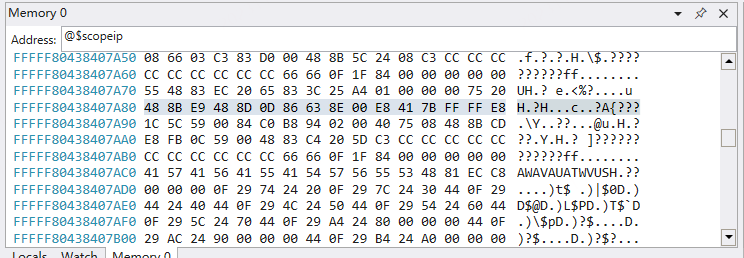
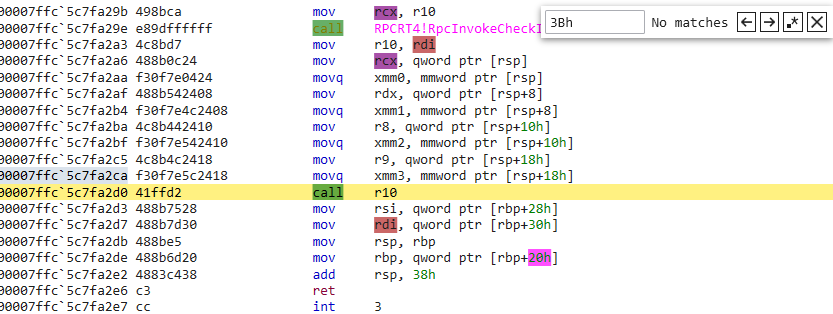
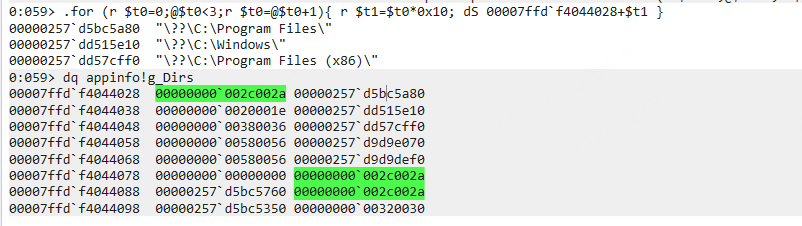

相关工具整理：
- API Monitor
- PCHunter工具 3.Windbg] 脚本
可参考微软官方文档调试：调试方法 - Windows drivers | Microsoft Learn
windbg mcp 提示词
【角色】你是 Windows 内核/应用调试专家。
【任务】基于 CDB 输出，推理崩溃根因，直至生成最终报告
【文件】
【规则】
1. 尽可能分析具体原因
2. 告诉我为什么它崩溃了，并给出可能的修复建议
3. 将分析结果输出到 MarkDown 文件
32/64切换
.load wow64exts设置微软PDB服务器
srv*D:\Symbols*https://msdl.microsoft.com/download/symbols保存 dump
.dump /ma C:\dumps\myapp.dmp调试技巧
- 直接按回车可以执行上一条命令
- 使用分分号作为分隔符，可以在同一行输入多条命令
- 按上下方向键可以浏览和选择以前输入过的命令
- 当命令提示符显示为BUSY时，即使命令编辑框可以输入命令，但是这个命令也不会被马上执行，要等WinDBG恢复到空闲状态才能执行
- 使用Ctrl+Break 来终止一个长时间未完成的命令。如果使用KD或则CDB，那么用Ctrl+C
- 选择菜单->Edit_>Write Window Text to File可以把之前敲过的所有命令记录到文件
伪寄存器
WinDBG自动定义了很多伪寄存器。在命令行和命令文件中都可以使用伪寄存器。WinDBG会自动将其替换（展开）为合适的值。例如下面这个@$scopeip 就是一个伪寄存器，它代表当前的eip指针。

下表列出了windbg所定义的部分寄存器(字典型知识，需要时查阅即可)
| 伪寄存器 | 含义 |
|---|---|
| $ea | 调试目标所执行上一条指令的有效地址 |
| $ea2 | 调试目标所执行上一条指令的第二个有效地址 |
| $exp | 表达式评估器所评估的上一条表达式 |
| $ra | 当前堆栈的返回地址。 这个在执行命令中特别有用。例如，g @$ra 将一直执行到返回地址处（虽然，对于“步出(stepping out)”当前函数gu (Go Up)是一个更加准备有效的方法）。 |
| $ip | 指令指针寄存器： x86 处理器：和 eip 相同 Itanium 处理器：涉及 iip（请看表后的注解） x64处理器：和rip相同 |
| $eip | 指令指针寄存器 |
| $eventip | 当前调试事件发生时的指令指针 |
| $previp | 上一事件的指令指针 |
| $relip | 与当前事件关联的指令指针 |
| $scopeip | 当前上下文的指令指针 |
| $exentry | 当前进程的入口地址 |
| $retreg | 首要的函数返回值寄存器 |
| $retreg64 | 64位格式的首要函数返回寄存器 |
| $csp | 栈顶指针ESP |
| $p | 上一个内存显示命令所打印的第一个值 |
| $proc | 当前进程EPROCESS结构的指针 |
| $thread | 当前线程ETHREAD结构的指针 |
| $peb | 当前进程的进程环境块(PEB)的地址 |
| $teb | 当前线程的线程环境块(TEB)地址 |
| $tpid | 拥有当前线程的进程ID(PID) |
| $tid | 当前线程的线程ID |
| $bpx | X号断点的地址 |
| $frame | 当前栈帧的序号 |
| $dbgtime | 当前时间 |
| $callret | 使用.call命令调用的上一个函数的返回值 |
| $ptrsize | 调试目标所在系统的指针类型宽度 |
| $pagesize | 调试目标所在的系统的内存页字节数 |
| 自定义伪寄存器 | $t1、$t2 |
查看入参
# 0n1 就是堆栈ID
.frame 0n1; dv /t /v 命令整理
? 0n 命令
Windbg中的 ?0n 是一个命令，用来设置表达式的数制为十进制。具体来说，当你需要查看一个内存地址或者变量以十进制格式时，可以使用 ?0n 命令。
在Windbg中，数制的表示：
-
0x表示十六进制
-
0n表示十进制
-
0t表示八进制
-
0y表示二进制。
Windbg默认数制为十六进制。
切换线程
在WinDbg中，可以使用以下命令来切换线程：
~命令：用于切换当前活动线程。例如，~0s将切换到线程ID为0的线程。~*命令：用于切换到所有线程中的下一个线程。~[]命令：用于切换到特定索引的线程。例如，~[3]s将切换到索引为3的线程。
请注意，使用这些命令时，要确保已经在调试会话中加载了适当的符号和源代码，并且已经打开了需要调试的进程和线程。
切换进程
在WinDbg中，可以使用以下命令来切换进程：
|命令：用于切换当前活动进程。例如，|1s将切换到进程ID为1的进程。~*命令：用于切换到所有进程中的下一个进程。~[]命令：用于切换到特定索引的进程。例如，~[3]s将切换到索引为3的进程。
请注意，使用这些命令时，要确保已经在调试会话中加载了适当的符号和源代码，并且已经打开了需要调试的进程和线程。
!process 命令
在Windows Debugger（WinDbg）中，!process命令用于显示有关特定进程或所有进程的信息，包括EPROCESS块。
该命令的语法随Windows版本的不同而有所不同。
在Windows NT 4.0中，它的语法如下：
!process[Process[Flags]]在Windows 2000中，它的语法如下：
!process[/sSession] [Process[Flags]]在Windows XP及更高版本中，它的语法如下：
!process[/sSession] [/mModule] [Process[Flags]]以上命令中的参数含义如下：
-
/sSession（Windows 2000及之后）指定拥有给定进程的会话（session）。 -
/mModule（Windows XP及之后）指定拥有需要的进程的模块。 -
Process指定目标机上某个进程的16进制地址或者进程ID。 -
Flags是用于控制命令行为的标志位，例如，/d用于显示完整的进程环境块，/c用于显示完整的线程环境块等。
以上信息仅供参考，如需更多信息，建议咨询专业的技术人员。
!IDT
在WinDbg中，!idt命令用于显示中断分配表（Interrupt Dispatch Table，简称IDT）中的中断服务例程（Interrupt Service Routine，简称ISR）。
该命令的语法为：!idt [IDT]，其中IDT是可选项，用于指定要显示的特定IDT。
如果未指定IDT，并且在没有指定-a选项的情况下，该命令将简短地显示目标机上所有处理器的IDT。
如果指定了-a选项，该命令将显示所有IDT的ISR。
如果需要获取该命令的帮助文本，可以在调试器命令窗口中使用!idt -?命令。
需要注意的是，该命令只能对x64或者x86目标机使用。
查看dll加载
eb ntdll!ShowSnaps 1eb ntdll!ShowSnaps 1这一命令是在Windows的NT操作系统内核（ntdll.dll）中调试多线程应用程序时使用的。它用于启用或禁用快照调试（Snapshots），这是一种在调试期间捕获特定系统状态的调试技术。
在这里，eb是指“编辑二进制”（Edit Binary）的命令，它允许你修改内存中的二进制数据。ntdll!ShowSnaps是你要修改的函数，而1是你要设置的值。在调试多线程应用时，ShowSnaps函数用于控制是否启用快照调试。如果将其设置为1，则启用快照调试；如果设置为0，则禁用快照调试。
需要注意的是，修改系统内核的代码可能会对系统造成严重的破坏，因此，除非你非常清楚自己在做什么，否则不建议进行这样的操作。在大多数情况下，如果你认为需要修改系统内核的代码来调试你的应用程序，那么你可能需要寻找其他方法，或者寻求专业的帮助。
设置日志记录位置
# 打开日志
.logopen /t c:\logs\mylogfile.txt
# 关闭日志
.logclose查看 call 寄存器时调用的函数
相关文章： 【调试技术】logexts
bu RPCRT4!Invoke+0x73 "u r10"
bu RPCRT4!Invoke+0x73-5 "r ;gc"
# 高级一点的用法
# 在 r10 被更新后看就可以了
bu RPCRT4!Invoke+0x73-2d "u r10 L5;gc"调试的汇编代码如下所示，为 RPCRT4!invoke+73的位置：

)当然还有可能会因为反汇编失败导致阻塞，这里可以根据自己的需求加入一些判断。
# 先保存一下寄存器，如果函数执行结束后返回的值为0，则对原来的地址进行反汇编，否则不执行操作
ba e1 RPCRT4!Invoke+0x62 "r $t1 = @r10;p;.if(@eax == 0){gc}.else{r;? @r10}"查看 LoadLibrary 加载的 dll
相关函数如下，具体情况具体调试，大致如下所示：
0:016> x kernelbase!Loadlibrary*
76e2c780 KERNELBASE!LoadLibraryA (void)
76e2ffb0 KERNELBASE!LoadLibraryExW (void)
76e2c810 KERNELBASE!LoadLibraryW (_LoadLibraryW@4)
76e2efb0 KERNELBASE!LoadLibraryExA (_LoadLibraryExA@12)LoadLibraryEx
bu KERNELBASE!LoadLibraryEx "dU poi(esp+4);"
# cmd 也可以自己加点 flag
.printf /on "--->"; dU poi(esp+4);查看 CreateFile 创建的是哪个文件并查看调用堆栈
bu KERNELBASE!CreateFileA ".printf /on \"--->\"; dU poi(esp+4);"
# 也可以按自己的需要添加后续操作
bu KERNELBASE!CreateFileW ".printf /on \"--->\"; dU poi(esp+4);!clrstack;gc"【脚本】遍历大小固定的结构体
如下所示 00007ffdf4044028 地址存放的是一个 _UNICODE_STRING* 的指针， _UNICODE_STRING 的大小为 0x10。
.for (r $t0=0;@$t0<3;r $t0=@$t0+1){ r $t1=$t0*0x10; dS 00007ffd`f4044028+$t1 }
# 如果不知道结构体大小是多少，可以使用??命令计算
> ??sizeof(nt!_UNICODE_STRING)
unsigned int64 0x10运行结果如下所示，打印了三字符串]。

【进程】
调试进程
双机调试]下，调试进程要用到
!process和.process命令，进入进程空间后，命令同用户态调试
-
查看某个进程
# 查看某个进程 !process 0 0 目标进程名 获取目标进程EPROCESS基本信息 # 例如查看 svchost.exe !process 0 0 svchost.exe # 查看加载了某个模块的进程 !process /m ntdll.dll 0 0 svchost.exe -
.process /p +EPROCESS信息 切换到目标进程空间
.process /p 进程地址 -
.reload /f /user 强制重新加载用户态符号
.reload /f /user -
.process /i /p 目标进程的EPROCESS 侵入式调试
.process /i /p 进程地址 -
bp 目标API 执行下断点命令
查看模块加载
bp ntdll!LdrLoadDll
在断点下输入：
eb Kd_LDR_MASK ffffffff
eb Kd_MM_MASK ffffffff
eb Kd_DEFAULT_MASK ffffffff
eb ntdll!ShowSnaps 1
eb ntdll!ShowErrors 1进程入口堆栈
0: kd> kcn
# Call Site
00 consent!WinMain
01 consent!__mainCRTStartup
02 KERNEL32!BaseThreadInitThunk
03 ntdll!RtlUserThreadStart进程入口断点
将 consent.exe 修改为自己的模块名即可，exe 和 dll 文件都支持
# 设置内核断点
sxr;
!gflag -ksl
!gflag +ksl;
sxe cpr consent.exe;sxe ld consent.exe死锁调试
相关参考
查看 IPv4 地址
r @$t0 = 3f45B412; .printf "%u.%u.%u.%u\n",((@$t0&FF)),((@$t0>>08)&FF),((@$t0>>10)&FF),((@$t0 >>18)&FF)内存布局
-
UUID 内存布局 前三位为小段序，后两位为大端序
{4c3d624d-fd6b-49a3-b9b7-09cb3cd3f047} 0:010> db 000000E906BFEC50 000000e9`06bfec50 4d 62 3d 4c 6b fd a3 49-b9 b7 09 cb 3c d3 f0 47 Mb=Lk..I....<..G
.Net 相关
!name2ee mscorlib.dll System.Runtime.Serialization.Formatters.Binary.BinaryFormatter..ctor
!name2ee System.dll System.Diagnostics.Process.StartWithCreateProcess
!name2ee DnrspEngine.dll DnrspEngine.Hooks.System.Process.PxyStartWithShellExecuteEx
!name2ee System.data.dll System.Data.SqlClient.TdsParser.CopyStringToBytes